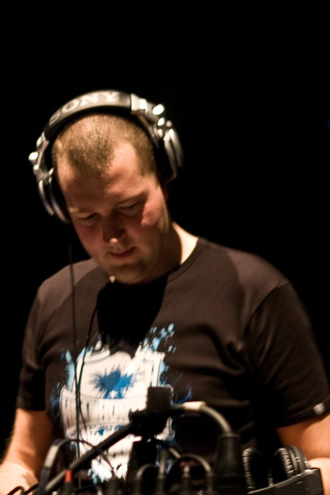

Brennan Heart: Prepping the next generation



The Australian hard dance community went crazy in June with the news that ITM and the team from Q-dance would be offering the opportunity of a lifetime – five lucky finalists would win the chance to play the Defqon.1 Festival in Sydney this September, with the final winner flown to Holland for the main Defqon.1 event in 2010. And who would be helping us determine what DJs are worthy of playing at the world’s greatest hard dance festival? None other than Holland’s Brennan Heart one of the regular mainstage destroyers at Defqon.1 in Holland as well as one of the big names who’ll be delivering the tunes at the festival’s Australian debut in September.
Already in full swing in tour around the country judging the heats (not to mention performing), he tells ITM that he has boundless enthusiasm for the tour. “A while ago Q-dance Australia asked me if I would be interested to be part of the judging for the competition over here. They didn’t have to ask me twice,” he laughs. “The thing I like about the concept is that new artists and local heroes are getting the chance to show what their vision of hardstyle and hard dance is. So I decided to get involved at the very same moment that they asked me.”
With a massive 50+ mixes online to listen to and the heat finalists announced last week, ITM’s Angus Paterson chats with Brennan Heart about the remaining dates on the tour, his new album Musical Impressions as well as what we can expect from the Defqon.1 Festival in September.
Hi there, this is Angus from inthemix. I understand you’ve just landed in Australia, how’s it going?
Hi there! Just landed in Darwin. Great flight this time, and a good sleep does the trick. I’m really exited about the tour for several reasons! It’s such a cliché to say “it’s so awesome”, or it’s “the best place to perform”. But this time I have to agree with that! You guys know how to party, and when it comes to gigs in Australia I totally forget the 24 hours traveling and the major jetlag I get every time. The people over here are so excited, and looking forward months to a certain event. I think every DJ from Europe feels so welcome!
The tour sees you kind of taking on the role of an experienced elder of hard dance, imparting your knowledge to a potential new breed of DJs. Is this something you’re happy to embrace?
First of all I’m happy about the fact hard dance and hardstyle is so huge over here. And is still is getting bigger by the day! A lot of diehard followers are also DJ/producers, which is really good! The style needs new breed and new influences. That is something that already happened in the trance scene. During my flight I read an article about Armin van Buuren and his vision about producing. For example, producers like Sander van Doorn are also a huge inspiration to Armin. So they all use more ’minimal’ and ‘electro’ influences now. That’s something the new generation could do for hardstyle as well. So to answer your question, yes… I’m really supporting the new generation. Sometimes it’s too bad to see that a lot of young ‘producers’ are too much focusing on internet and writing on forums. Some of them seem to loose focus. Making music isn’t about being “blogger #1”. For one of my album tracks I was inspired by this internet and forum phenomenon. Maybe not the best way to make friends, but I felt like it. The new generation needs to focus on music itself again, because the scene will need it.
What sort of talent levels are you expecting, and what do you look for in a competitor?
I expect a level of DJs who can perform at Defqon.1 levels. The DJs who are playing at the contest have already proven themselves. I look for the DJ/producers who will notice what’s going on when people are on the floor. Know when to mix, how to build up a set and have a good rapport with the dancefloor. And if possible, bring a unique sound with own productions or remixes.
Do you think it says a lot about the Australian hard dance scene that we can support such a national DJ competition, and there are so many hopefuls across the country?
Yes, for sure! It proves Australia is ready for it, if there is so much talent out there! I also hope people keep their respect for their scene… it’s not that common to have a strong scene like this. I see a lot of countries where hard dance has a good chance to build up its own scene, but sometimes there are no promotors who really know what to do. The events here in Australia can be compared with the ones we have in Holland (which is definitely a compliment).
Let’s talk about your new album Musical Impressions. From what we’ve seen there so far seems to be a bit of a theme going on there, from the artwork showing you in your studio to what seems like a few stabs at the music industry. Tell us a little bit about what you were aiming for.
The main idea behind my album was “making music”. I still love writing and composing the best… Creating new ideas and new sounds, I also looked for influences that are not so common for hardstyle in the first place. I travel a lot, since I can ‘entertain’ myself easy for a few hours with creating ideas and lines for new tracks, I write them down. Maybe there are a few lines and themes about the music industry. But don’t take things to seriously… I didn’t when I wrote it. When you are in a creative flow, everything can be a trigger for an idea. I never had the intention of bringing a real message in my music. I still see my music like a vibe that is recorded.
Where you driven by wanting to take your music to new places with this album?
If you plan how it should work out, then it won’t work I think. Music is an emotion, but also making music is an emotion and a creative process that can’t be forced at any time. You can create a certain vibe and hope for the best. Of course there are some choices I had to make production wise…I didn’t want to make an album just for the Dutch scene.
Hardstyle and hard dance are obviously very direct and upfront forms of music, that work very well in the big arenas. What are the challenges inherent in trying to craft something that works as an album?
It’s not that easy to produce a whole album. If you don’t pay attention you will have a whole CD with the same sound. That’s why I took a little break and didn’t release anything for a while. I really had to find the right focus and also stay focused till the album was finished.
Of course, you’ll also be playing at Defqon.1 in less than a month. You’ve got a strong heritage with this event, having produced the anthem for the 2007 event. What does Defqon.1 mean to you?
Defqon.1 means the ultimate festival feeling for me! The atmosphere is so unique. Of course we’ve only had the Dutch edition so far. This year I did my album presentation at Defqon.1, and stayed the whole day as a visitor. Everyone is exited to be part of it, so many happy people around sharing the same vibe! The thoughts I have on Defqon.1 are – this is the reason I make music.
And tell us a little bit about what Aussie clubbers can expect? Does it live up to the hype?
Of course I will play some tracks from the album I’ve just released, and I’m also working on some new tracks and remixes at the moment. Good thing is, I can’t go into the studio for a few weeks now… it’s the perfect time to make up new ideas while traveling. I will fly back to Holland after the competition, meanwhile playing in Denmark, Canada and Q-base, and on the 19th of September I will be back for Defqon.1… Make sure you are all prepared for one of the best parties ever!
Catch Brennan Heart judging and performing on the remaining dates…
Fri 28th Aug – Sydney
Sat 29th Aug – Brisbane
Defqon.1 Festival comes to the Sydney International Regatta Centre on Saturday September 19th. Tickets on sale now from tickets.q-dance.com.au. Check out the trailer for Brennan Heart’s Music Impressions below…